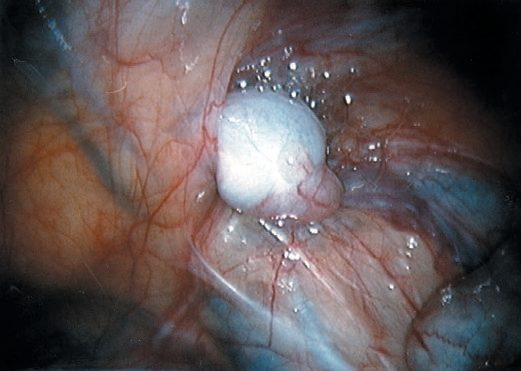
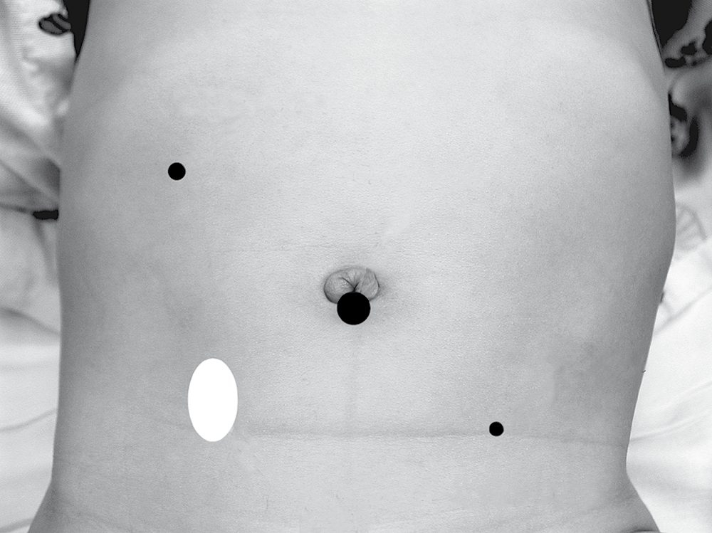
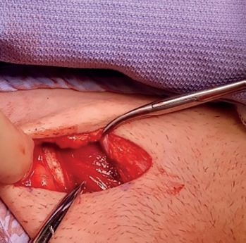

Undescended Testis
Summary
Undescended testis (cryptorchidism) is incomplete descent of one or both testes along their normal path to the scrotum, occurring in about 3–4% of full-term and up to 30% of premature male infants, with many descending spontaneously in the first months of life [1][2]. It must be distinguished from the benign retractile testis, and management is surgical orchidopexy, ideally by 6–18 months of age, to reduce the risks of infertility, malignancy, torsion, and hernia [1][2].
Definition
- Incomplete descent of the testis, also known as cryptorchidism, occurs when one or both testes are arrested at some point along the normal path to the scrotum.
- An ectopic testis is one that is abnormally placed outside this path [1].
- A truly undescended testis is in its correct anatomical path but has failed to reach the scrotum, and is typically small and abnormal, with a separated epididymis and often an associated indirect inguinal hernial sac.
- An ectopic testis has descended to an abnormal site (superficial inguinal pouch, femoral triangle, base of the penis, or perineum) but is itself normal, with a normal descent mechanism but faulty guidance [3].
- A retractile testis is a normally descended testis that retracts into the inguinal canal due to a hyperreflexive cremasteric muscle; it can be milked down into the scrotum and does not require operative intervention [2][4].
Pathophysiology
- The testis develops in utero on the posterior abdominal wall, with blood supply from the aorta and venous drainage to the inferior vena cava (on the left via the renal vein).
- Guided by the gubernaculum, it descends into the scrotum between 25 and 30 weeks' gestation, with most testes reaching the scrotum by full term [3].
- Incompletely descended testes are often macroscopically normal in early childhood, but by puberty the testis is typically smaller than its intrascrotal counterpart.
- Microscopic changes (loss of Leydig cells, degeneration of Sertoli cells, decreased spermatogenesis) are apparent from 1–2 years of age, and the higher the testis, the greater the degree of histological change [1].
- The undescended testis is associated with histologic and morphologic changes as early as 6 months of age, with atrophy of Leydig cells, decreased tubular diameter, and impaired spermatogenesis occurring by 2 years of age [4].
- The testis may lie intra-abdominally (usually extraperitoneal just inside the internal inguinal ring), within the inguinal canal (may not be palpable), or extracanalicularly (usually at the scrotal neck, high scrotal) [1].
Clinical features
- The condition is more common on the right side and is bilateral in 20% of cases.
- Secondary sexual characteristics in adults are typically normal [1].
- More than 70% of cryptorchid testes are palpable on physical examination; in the remaining 30% with a non-palpable testis, the challenge is to confirm absence/presence and localize the viable testis [1].
- The condition is sometimes missed in the neonatal period and only discovered later, when a hernia, testicular pain, or acute torsion may draw attention to it [1].
- Undescended testis rarely presents acutely as torsion, with a tender inguinal mass [2].
- Differentiating a retractile testis is essential: with the child relaxed in a warm room, a retractile testis can be gently milked down to the bottom of the scrotum and the scrotum is normally developed, whereas the scrotum overlying a true undescended testis is underdeveloped [1][3].
- Retractile testes require yearly monitoring because of a 2–50% reported risk of becoming an acquired undescended testis [1].
Etiology
- About 3% of full-term and 30% of premature male infants are born with one or both testes undescended.
- About two-thirds reach the scrotum during the first 3 months of life, and further descent after that is uncommon, with maldescent incidence at 1 year around 1% [1].
- Oxford Handbook cites incidence of 4% of newborn term boys, falling to 1% at 3 months, and notes it is more common on the right side [2].
- Sabiston cites up to 30% of preterm infants and 2–3% of full-term infants as affected [4].
- Cryptorchidism occurs in approximately 1.5–4% of fathers and 6% of brothers of affected individuals, suggesting a familial/genetic component [1].
Diagnosis
- No investigations are required for a palpable undescended testis.
- Chromosomal studies and an hCG stimulation test may be requested for bilateral impalpable testes, which should also prompt consideration of a disorder of sex development [2].
- Ultrasound has a high positive predictive value for inguinally located testes but only 45% sensitivity for localizing all non-palpable testes.
- CT is precluded by cost and ionising radiation, and MRI, while more sensitive and specific, has cost, availability, and paediatric anaesthesia issues.
- No radiological test can conclude with 100% accuracy that a testis is absent [1].
- Diagnostic laparoscopy has become the gold standard for a non-palpable testis and also provides a treatment option [1][2][4].
- Examination should occur in a warm room with the child relaxed to allow accurate assessment of testicular position [3].

Treatment and Management
- There is little evidence for hormonal therapy to induce testicular descent, with response rates equivalent to placebo and lack of long-term efficacy.
- Hormone manipulation is ineffective in a true undescended testis [1][2].
- Surgical orchidopexy is the mainstay of treatment, usually performed between 6 and 18 months of age (corrected age used for premature babies) to reduce the risk of infertility, torsion, trauma, and increased ambient (intra-abdominal) temperature effects [1][2].
- For unilateral palpable testis in the inguinal canal, standard dartos-pouch orchidopexy is performed at 6–12 months of age [4].
- Intracanalicular or ectopic testis should be managed by one-stage orchidopexy.
- Intra-abdominal testis can be brought down by one- or two-stage laparoscopic orchidopexy, with 50–90% success [2].
- Scrotal positioning also facilitates future self-examination to detect neoplastic change [2].
- The examination hinges on a pouch most candidates cannot name, and on the fact that a testis in the canal cannot be felt.
- A normally descended testis reaches the scrotal floor with a good cord length above it and stays there; testicular descent is usually complete by the 30th week of gestation, and at birth 4% of full-term and 30% of premature boys have an undescended testis [5]. A testis cannot be palpated in the canal; it can only be felt when delivered to the superficial pouch, also called Denis Browne's pouch, a pocket between Scarpa's fascia and the external oblique fascia at the external ring [5].
- Cremasteric activity may itself draw a testis into the pouch or the canal, and gentle strokes over the canal directed towards the scrotum may deliver either a normal scrotal testis or a palpable undescended one [5]. Ectopic testes lie beneath the skin of the medial thigh or lower abdomen and have a long cord, which makes scrotal placement easy at operation [5].
- The examination schedule and the operative window are two different things and are commonly conflated.
- Boys should be examined at birth and at 6 weeks; if an undescended testis is found they should be seen at 3 months, since a testis is unlikely to descend after this time; and orchidopexy is then scheduled for between 6 and 12 months [5].
- Occasionally a palpable undescended testis undergoes torsion and presents as a painful lump in the groin with an empty hemiscrotum [5].
- One finding mandates a different referral entirely: hypospadias with bilateral impalpable undescended testes raises the possibility of a disorder of sexual differentiation [5].
- Two conditions sit alongside the undescended testis and are distinguished by their natural history, not their position.
- A retractile testis is palpable in the groin and can be brought into the scrotum but promptly returns.
- Retractile testes are common in infants and most eventually settle, but follow-up is needed because some permanently ascend and require an orchidopexy [5].
- An ascending testis is one that was in the scrotum in infancy and is later found in the high scrotum or groin, attributed to insufficient cord growth, and requires an orchidopexy
- Some had been retractile in infancy, and an argument exists for screening all boys for ascending testes in late childhood [5].
- The operation differs according to whether the testis can be felt, and the impalpable pathway is a decision tree at laparoscopy.
- For a palpable undescended testis, orchidopexy at 6 to 12 months: the canal is opened through an external oblique incision, the testis mobilised on its vas and vessels, the gubernaculum usually divided, any peritoneal outpocketing ligated and divided at the internal ring where dissection adds length to the cord, and the testis placed in a subdartos scrotal pouch
- Early orchidopexy, placing the testis in a cooler environment, improves spermatogenesis and may reduce the risk of testicular malignancy [5].
For an impalpable testis, which may be absent, canalicular or abdominal, imaging is unreliable, and examination under anaesthesia with laparoscopy is performed at around 1 year [5]:
| Finding | Action |
|---|---|
| Palpable under anaesthesia | Inguinal orchidopexy |
| Blind-ending vas at laparoscopy | The testis is absent |
| Vas and vessels entering the inguinal canal | Explore the groin: a canalicular testis may be amenable to inguinal orchidopexy, or there may be a remnant to excise |
| Viable intra-abdominal testis | Two-stage Fowler-Stephens orchidopexy |
Table reformats the laparoscopic findings and their consequences [5]. In the first stage of a Fowler-Stephens procedure the testicular vessels are ligated and the testis is left in situ, anticipating survival on the vessels accompanying the vas. Three months later a second operation brings the testis into the scrotum if it has survived [5].
- The UK does not screen for undescended testis with a test; it screens with a physical examination performed twice, at fixed times, and NG194 sets those times.
- Carry out a complete examination of the baby within 72 hours of the birth and again at 6 to 8 weeks, as part of the NHS newborn and infant physical examination (NIPE) screening programme [6].
- The examination is itemised head to toe, and the genital component is specified as "genitalia and anus: completeness and patency and undescended testes in boys", alongside the eyes (opacities, red reflex, colour of sclera), the heart (position, rate, rhythm, sounds, murmurs and femoral pulse volume), and the hips (Barlow and Ortolani's manoeuvres) [6].
- The two-point timing is the whole design.
- A single neonatal examination would over-refer, because many testes descend in the first weeks.
- A single later examination would miss the window in which orchidopexy is scheduled.
- The 6-to-8-week repeat is what converts "not in the scrotum at birth" into "still not in the scrotum", and it is the finding at that second examination that starts the surgical pathway described from the textbook sources above.
- At every postnatal contact, clinicians are also asked to ask parents if they have any concerns about their baby's general wellbeing, feeding or development, review the history and assess the baby's health including physical inspection and observation [6].
- The adult pathway the boy eventually enters is set by NG12, and it is worth noting what that guideline does not say.
- NG12's testicular criteria are purely symptom-based: consider a suspected cancer pathway referral for testicular cancer in men, and trans women and non-binary people with male reproductive organs, if they have a non-painful enlargement or change in shape or texture of the testis, and consider an urgent, direct access ultrasound scan for those who have unexplained or persistent testicular symptoms [7]. A history of undescended testis does not appear in the NG12 referral criteria at all, and there is no NICE recommendation for surveillance or screening of men treated for cryptorchidism.
- The elevated malignancy risk described from the textbook sources above therefore has no NICE-defined follow-up attached to it in the UK.
- What the pathway relies on instead is that orchidopexy places the testis somewhere it can be examined, so that the symptom-based criteria above can operate at all.
Surgeries
- Orchidopexy mobilises the testis and spermatic cord and repositions the testis in the scrotum, performed through a short incision over the deep inguinal ring, dividing the external oblique aponeurosis in the direction of its fibres [1].
- Three manoeuvres help gain the length needed: identification, separation, and ligation of a patent processus vaginalis; division of the coverings of the spermatic cord (including the cremasteric muscle); and division of lateral fibrous bands just inside the internal inguinal ring, with care to avoid injury to the tiny vas and testicular vessels [1].
- The empty hemiscrotum is stretched and the testis is placed in a pouch constructed between the dartos muscle and the skin [1].
- For non-palpable testes, diagnostic laparoscopy is recommended under anaesthesia; if testicular vessels are seen exiting the internal ring, an open inguinal orchidopexy is performed, while for an intra-abdominal testis, laparoscopic options include: (1) laparoscopic orchidopexy preserving the vessels, dissecting the testis on a triangular pedicle containing the testicular vessels and vas; (2) laparoscopic one-stage Fowler–Stephens orchidopexy, dividing the vessels and bringing the testis down on a pedicle of the vas in one stage; or (3) laparoscopic two-stage Fowler–Stephens orchidopexy, dividing vessels with clips but delaying testicular dissection for 6 months to allow collateral development [1][4].
- If no testis is found at exploratory laparoscopy, blind-ending vessels or a testicular nubbin must be identified to rule out a missing (vanishing) testis; if vessels enter a closed internal ring, scrotal exploration usually finds a testicular nubbin, whereas if vessels enter an open ring, the testis can often be pushed into the abdomen [1].
- Orchidectomy should be considered if the incompletely descended testis is atrophic and/or malignancy is suspected, particularly in the postpubertal boy with a normal contralateral testis [1].
- For bilateral nonpalpable testes, an algorithm using hCG stimulation and laparoscopy with exploration guides management, including Fowler-Stephens orchiopexy, primary orchiopexy, or orchiectomy depending on findings [4].


Complications
- Postoperative testicular atrophy occurs in <2% of cases, but is much more common (10–50%) when the testis was intra-abdominal preoperatively.
- Retraction can also occur postoperatively [2].
- Around 90% of boys with an undescended testis have a patent processus vaginalis, though clinically apparent hernia is much less common [1].
- The undescended testis is more prone to testicular torsion, largely due to a developmental abnormality between the testis and its mesentery [1].
- The overall risk of testicular cancer is around two to three times the general population if orchidopexy is performed before puberty, and five to six times higher if performed after puberty.
- Risk does not appear to differ between early infancy and later childhood orchidopexy [1].
- Undescended testicles carry an increased risk of testicular cancer, most often seminoma [9].
- The most common tumor type in untreated undescended testes is seminoma (peak age 15–45 years).
- After orchidopexy, seminomas represent only about 30% of tumors arising in previously undescended testes [1].
Prognosis
- Men with undescended testes may have reduced fertility even after orchidopexy.
- The infertility rate for unilateral cases is not believed to differ greatly from the general population, but fertility reduction after orchidopexy for bilateral cryptorchidism is about 38%, and patients receiving orchidopexy as adults for bilateral undescended testes are almost always infertile and azoospermic (though pregnancies via sperm retrieval and assisted reproduction have been reported) [1].
- Early surgery is recommended because of degeneration of spermatogenic tissue and reduced spermatogonia counts after the second year of life in untreated undescended testes [1].
- Testes absent from the scrotum after 3 months of age are unlikely to descend spontaneously [1].
References
- Bailey & Love's Short Practice of Surgery, 28th ed., Ch. 86 The testis and scrotum
- Oxford Handbook of Clinical Surgery, 5th ed., Ch. 13 Paediatric surgery
- Browse's Introduction to the Symptoms and Signs of Surgical Disease, 6th ed., Ch. 18 Conditions of the testes
- Sabiston Textbook of Surgery, 22nd ed., Ch. 117 Pediatric Surgery
- Bailey & Love's Short Practice of Surgery, 28th ed., Ch. 17 Paediatric surgery
- NICE Guideline NG194: Postnatal care. National Institute for Health and Care Excellence, London, UK, 2021., 1.3.1; 1.3.3 www.nice.org.uk
- NICE Guideline NG12: Suspected cancer: recognition and referral (2015, updated 2026), 1.6.7; 1.6.8 www.nice.org.uk
- Sabiston Textbook of Surgery, 22nd ed., Ch. 11
- The ABSITE Review, 2022, Ch. 39 Urology